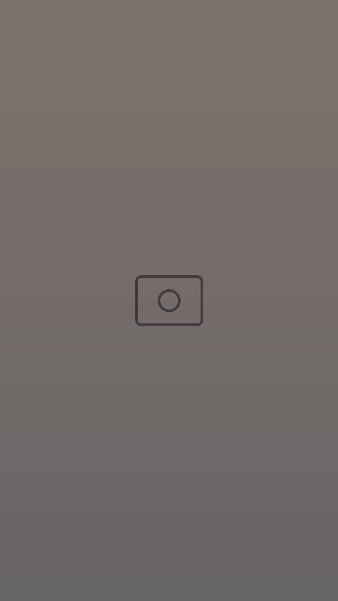
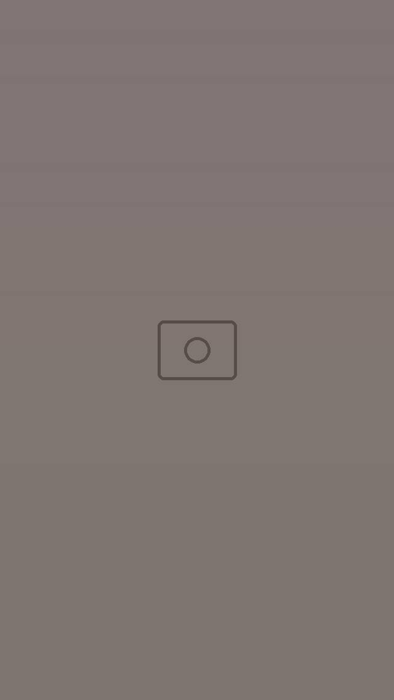
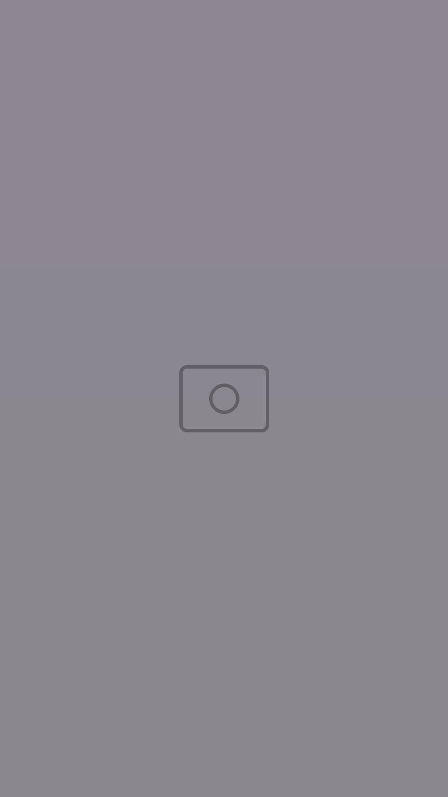
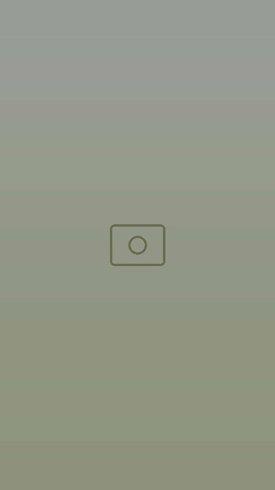
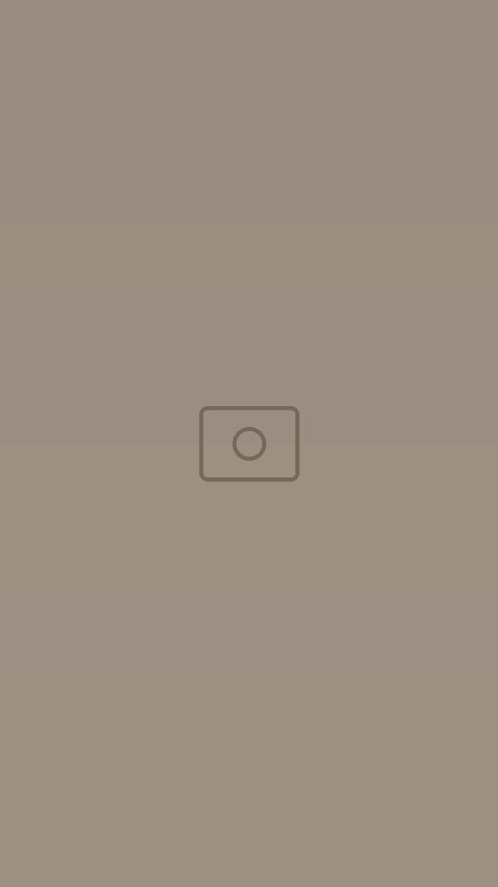

Iced coffee signature
Notre café glacé maison, servi en chope.
« Slow sips only »
Ouvert 8h – 16h · fermé le vendredi
Un coffee shop à Houmt Souk : sièges en bois anciens, carreaux arabes, horloges et radios d'un autre temps. Cafés, iced coffee, gaufres et petits-déjeuners.
Old objects, new stories
Au Gramophone, les objets ont tous un passé : la télé d'antan sur son meuble, les postes de radio en rang sur la brique, le piano, les horloges figées et le sol en carreaux colorés. Un lieu chaleureux et créatif, pour souffler seul ou se retrouver entre amis.



Fait main
Le café devient atelier : on y façonne l'argile, on y fabrique des bijoux, on y accueille des artistes et des sessions musicales.
Créez votre mug, votre bol ou votre coupelle en argile, débutant ou confirmé. Matériel fourni (argile, outils, tabliers), places limitées : réservation recommandée.
Coquillages, étoiles de mer et inspirations venues du large : des pièces uniques façonnées par petits et grands.
Expositions, fêtes de saison, sessions dub et live : demandez-nous les prochaines dates.

Horaires & accès
| Lundi | 08:00 – 16:00 |
|---|---|
| Mardi | 08:00 – 16:00 |
| Mercredi | 08:00 – 16:00 |
| Jeudi | 08:00 – 16:00 |
| Vendredi | Fermé |
| Samedi | 08:00 – 16:00 |
| Dimanche | 08:00 – 16:00 |
تتشرف بخدمتكم